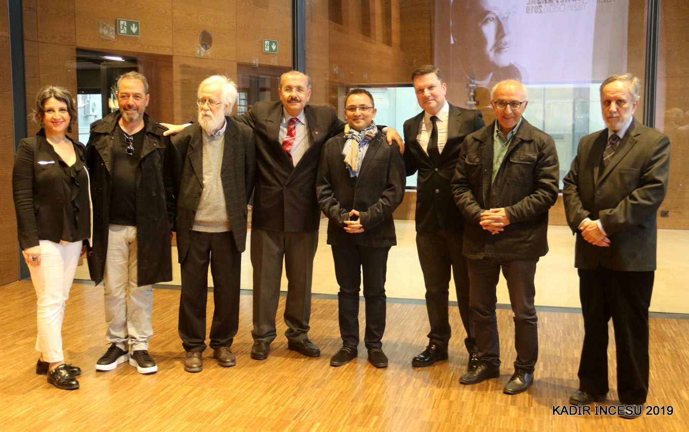
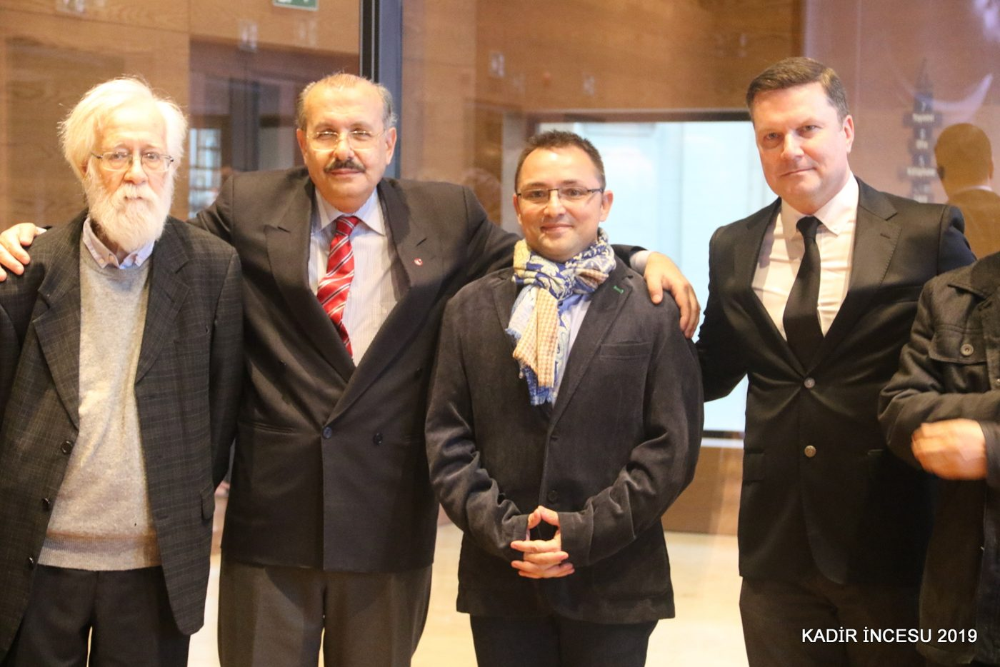

Haber ve Belge Arşivi
Basında ve Ödüller
2008–2025

Bu sayfada Arif Yılmaz’ın aldığı ödüllere, plaketlere ve akademik çalışmalarının basındaki yansımalarına ilişkin belge ve haberler bir araya getirilmiştir. Haberlerin çoğu, Gaziantep Üniversitesinde Türkçe Eğitimi Bölümü başkanlığı, Türkçe Topluluğu akademik danışmanlığı ve TÖMER müdürlüğü görevlerini yürüttüğü yıllara aittir. Son haberler ise Semerkant’taki misafir öğretim üyeliği dönemini ve Türk dünyasındaki üniversitelere yapılan ziyaretleri anlatır. Haberlerin özgün kaynaklarına başlıklardaki bağlantılar üzerinden erişilebilir. Uşak Üniversitesi kaynaklı haberlerin arşiv kayıtları da site bünyesinde korunmaktadır.
Ödüller
2019 Sabahattin Kudret Aksal Yazın Ödülü, Seçiciler Kurulu Özel Ödülü
Eray Canberk başkanlığındaki Seçiciler Kurulu 28 Mart 2019’da toplanarak özel ödülünü Arif Yılmaz’a verdi. Kurul, kararında Aksal’ın yapıtlarını, dergi ve gazetelerde kalmış yazılarını, söyleşilerini ve soruşturma yanıtlarını bilimsel yöntemlerle ve titizlikle yayına hazırlayan emeği öne çıkardı. Ödül, Aksal’ın doğum günü olan 25 Nisan 2019’da Yapı Kredi Yayınlarında düzenlenen törenle sunuldu. Canberk, BirGün gazetesinde Kadir İncesu’ya verdiği söyleşide dergi ve gazete sayfalarında unutulmaya yüz tutmuş yazıların derlenmesini edebiyat tarihine bir katkı olarak değerlendirdi.
Eray Canberk ile söyleşi (BirGün, 1 Mayıs 2019)Sabahattin Kudret Aksal dosyası




Fotoğraflar Kadir İncesu’ya aittir.
Plaket ve Belgeler
- 6 Aralık 2011Gönüllülük belgesiAvrupa Gönüllülük Yılı dolayısıyla Türkiye Eğitim Gönüllüleri Vakfı, Gaziantep Üniversitesi ve Gaziantep Ticaret Odasının düzenlediği törende belge alan öğretim üyeleri arasında yer aldı.GAÜN Haber Merkezi
- 29 Mart 2011Sağlık, Kültür ve Spor Daire Başkanlığı plaketiGaziantep Üniversitesi Sağlık, Kültür ve Spor Daire Başkanlığı, Türkçe Topluluğuna ve Bilinçli Gençler Topluluğuna verdiği destek için Arif Yılmaz’a plaket sundu.GAÜN Haber Merkezi
Özbekistan Basınında
Arif Yılmaz’ın Semerkant’taki misafir öğretim üyeliği döneminde katıldığı iki konferans Özbekistan’da haber oldu. İki haberde de kendisiyle yapılan kısa söyleşiler yayımlandı.
Samarqand MTRK, Diyor yangiliklari
Ekim 2024
Semerkant Devlet Yabancı Diller Enstitüsünde 10–11 Ekim 2024’te düzenlenen kültürlerarası diyalog konferansı, Semerkant bölge televizyonunun haber programında işlendi. Haberde Arif Yılmaz, konferansın Türkiye’den gelen katılımcısı olarak sorulara cevap verdi.
Video 2 dakika 56 saniye sürüyor. Konferansı anlatan bölüm haberi de bu sitede okunabilir.
Asya Teknoloji Üniversitesi (Osiyo Texnologiyalar Universiteti)
Kasım 2024
Karşi’deki Asya Teknoloji Üniversitesinin 15–16 Kasım 2024’te düzenlediği filoloji konferansını üniversitenin basın birimi haber videosuyla duyurdu. Videoda Uşak Üniversitesi doçenti olarak tanıtılan Arif Yılmaz konferansla ilgili görüşlerini anlattı.
Video 2 dakika 45 saniye sürüyor. Konferansı anlatan bölüm haberi de bu sitede okunabilir.
Videolar Arif Yılmaz’ın kişisel arşivindendir.
Basında
- 2 Ocak 2025Kırgızistan-Türkiye Manas Üniversitesine ziyaretBölüm başkanı olarak Manas Üniversitesi Rektör Yardımcısı Prof. Dr. Recai Doğan ile görüştü. Görüşmede Uşak Üniversitesi Türk Dili ve Edebiyatı Bölümü ile Manas Üniversitesi Türkoloji Bölümü arasındaki iş birliği olanakları ele alındı. Ziyaret, Karahanlıların başkentlerinden Balasagun’a yapılan geziyle sürdü.Uşak Üniversitesi Türk Dili ve Edebiyatı BölümüHaberin tamamı
- 28 Aralık 2024Hoca Ahmet Yesevi Üniversitesine ziyaretKazakistan’ın Türkistan şehrindeki Hoca Ahmet Yesevi Uluslararası Türk-Kazak Üniversitesinin Türkoloji Bölümünü ziyaret ederek bölüm başkanı Dr. Kenan Semiz ile ortak projeleri ve öğrenci değişimini görüştü.Uşak Üniversitesi Türk Dili ve Edebiyatı BölümüHaberin tamamı
- 15 Kasım 2024Karşi’de “Dijital Çağda Şiirin Metamorfozu” bildirisiAsya Teknoloji Üniversitesinin Karşi’de düzenlediği filoloji konferansında İbrahim Tenekeci’nin Instagram paylaşımları üzerine hazırladığı bildiriyi sundu.Uşak Üniversitesi Türk Dili ve Edebiyatı BölümüHaberin tamamıHaber videosu
- 14 Ekim 2024Semerkant’ta “Yabancılaşmanın Dili” bildirisiSemerkant Devlet Yabancı Diller Enstitüsünün kültürlerarası diyalog konulu uluslararası konferansında Hakan Günday’ın Daha romanındaki yabancılaşma sembolleri üzerine bildirisini sundu.Uşak Üniversitesi Türk Dili ve Edebiyatı BölümüHaberin tamamıHaber videosu
- 13 Ekim 2024Semerkant’ta misafir öğretim üyeliğiUşak Üniversitesi ile Semerkant Devlet Yabancı Diller Enstitüsü arasındaki öğretim üyesi değişimi kapsamında 2024–2025 güz yarıyılında Semerkant’ta Türk dili ve modern Türk edebiyatı dersleri vermeye başladı. Enstitü Rektörü Prof. Dr. Xolikov Bahodir Alikulovich kendisini makamında ağırladı.Uşak Üniversitesi Türk Dili ve Edebiyatı BölümüHaberin tamamı
- 9 Mart 2017“Mehmet Akif Ersoy ve İstiklal Marşı” konferansıİstiklal Marşı’nın Kabulü ve Mehmet Âkif Ersoy’u Anma Haftası etkinlikleri arasında Uşak Üniversitesi Mustafa Kemal Paşa Amfisinde konferans verdi.Uşak Üniversitesi Sağlık Kültür ve Spor Daire Başkanlığı, 2017 Faaliyet RaporuAfiş ve ayrıntılar
- 7 Temmuz 2012Yurt dışından gelen öğrencilerden Rektöre ziyaretTÖMER’in Yunus Emre Enstitüsü ile birlikte düzenlediği Türkçe Yaz Okuluna 13 ülkeden katılan 19 öğrenci, TÖMER Müdürü Arif Yılmaz ile birlikte Rektör Prof. Dr. M. Yavuz Coşkun’u ziyaret etti.GAÜN Haber Merkezi
- 27 Ocak 2012TÖMER’de eğitim semineriGaziantep Üniversitesi TÖMER’in düzenlediği eğitim seminerine Ankara Üniversitesi TÖMER Müdürü Prof. Dr. Engin Uzun konuk oldu. Arif Yılmaz seminere TÖMER Müdürü olarak katıldı.GAÜN Haber Merkezi
- 25 Kasım 2011TÖMER’de bilgilendirme ve paylaşım toplantısıTÖMER ile Türkçe Topluluğunun Gazi Üniversitesi Türkçe Öğretim Merkezi ile birlikte düzenlediği toplantıda Türkçe öğretim merkezlerinin amaçlarını ve Gaziantep Üniversitesi TÖMER’in bu alandaki yerini anlattı.GAÜN Haber Merkezi
- 4 Kasım 2011Türkçe Topluluğu “I. Büyük Türkçe Kurultayı”ndaAkademik danışmanlığını yürüttüğü Türkçe Topluluğunun üyeleri, Bilkent Üniversitesi ile Genç Kalemler Derneğinin Ankara’da düzenlediği I. Büyük Türkçe Kurultayına katıldı.GAÜN Haber Merkezi
- 6 Eylül 2011TÖMER’de sertifika töreniKuzey Irak Selahaddin Üniversitesi Türk Dili öğrencileri, TÖMER’deki Türkiye Türkçesi Dil Programını tamamlayarak sertifikalarını TÖMER Müdürü Arif Yılmaz’ın da katıldığı törenle aldı.GAÜN Haber Merkezi
- 9 Mart 2011Niyazi Yıldırım Gençosmanoğlu’nu anma programıTürkçe Topluluğu ile İLESAM’ın birlikte hazırladığı anma programını yönetti ve Gençosmanoğlu’nun destan şairliği üzerine konuştu.GAÜN Haber MerkeziProgram ve fotoğraflar
- 19 Ocak 2011Türkçe Topluluğundan okula kitap bağışıTürkçe Topluluğu, Şahinbey’deki Atatürk İlköğretim Okuluna kitap bağışladı. Kitaplar, topluluğun akademik danışmanı Arif Yılmaz ile öğrencilerin katıldığı ziyarette okul müdürüne teslim edildi.GAÜN Haber Merkezi
- 17 Aralık 2010Türkçe Topluluğunda teşekkür töreniÖğretmenler Günü dinletisinde görev alan öğrencilere teşekkür belgeleri verildi. Törende topluluk adına teşekkür konuşmasını Arif Yılmaz yaptı.GAÜN Haber Merkezi
- 23 Eylül 2010Türk Dil Bayramında Rektöre ziyaretTürkçe Topluluğu, akademik danışmanı Arif Yılmaz ile birlikte Rektör Prof. Dr. M. Yavuz Coşkun’u ziyaret ederek topluluğun çalışmalarını anlattı. Ziyarette topluluğun Halep Üniversitesi Türk Dili ve Edebiyatı Bölümüne yaptığı gezi ile Halep’teki şiir dinletisi de söz konusu edildi.GAÜN Haber Merkezi
- 20 Mayıs 2009“Mısralarla Yalnızlık” şiir dinletisiTürkçe Eğitimi Bölümü öğrencilerinin Atatürk Kültür Merkezinde sunduğu dinletinin sonunda öğrencilere teşekkür belgelerini bölüm başkanı olarak verdi.GAÜN Haber Merkezi
- 11 Kasım 2008“Atatürk’ü Anlamak Eğitim, Dil ve Bilim” paneli10 Kasım Atatürk’ü Anma Etkinlikleri kapsamında düzenlenen panelde Atatürk ile Türk dili arasındaki bağı anlattı.GAÜN Haber Merkezi